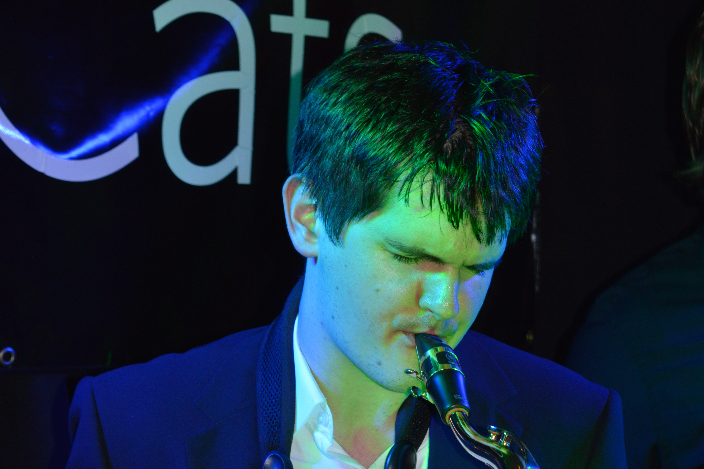
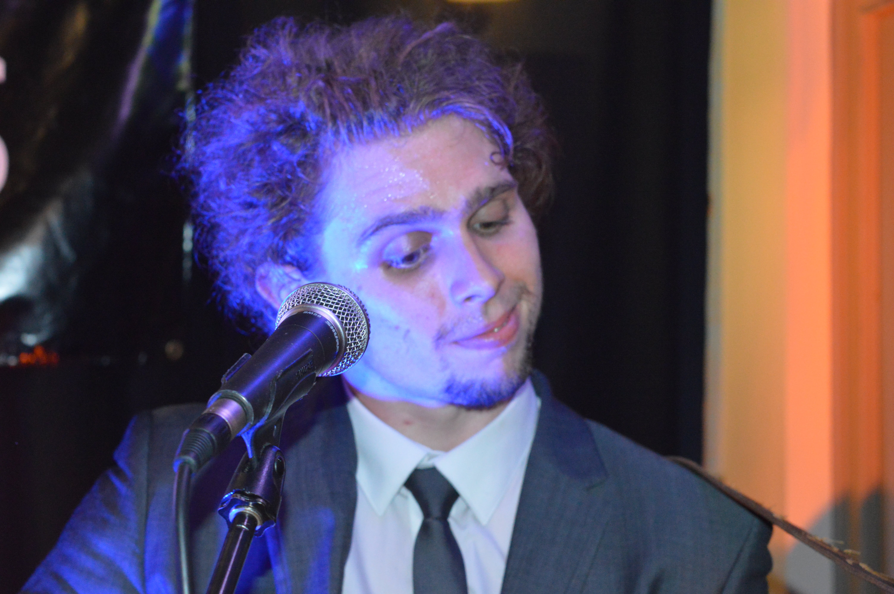

Oliver Stone has over 15 years playing experience and has played in function bands since he was 16. He originally trained as a cellist before moving to bass guitar at 13 years old. Oliver has played extensively around the East Midlands area and played bass for the first band ever to perform at the World Pole Dancing Championships.
Robert Brooks has over 9 years playing experience and is a talented multi-instrumentalist. He has a wealth of experience ranging from being the musical director for a National Theatre production of Alice to composing and scoring a piece of contemporary/classical music performed by the Sinfonia Viva Orchestra. Having a wide-interest in musical styles allows Robert to adapt to a diverse repertoire of songs.
Jareth Brownhill became involved in music when he entered a local karaoke competition at 18 for the fun and ended up winning. Jareth then decided to enter more singing competitions against professional vocalists. This is where he focused on his performance, gaining more confidence as time went on. Jareth then found a direction for himself when he met the Stone brothers, now Jareth's goal is to become a high end singing teacher, supporting a family by professional singing.
Rupert Stone has over 17 years playing experience and has an honours degree in music from Leeds University. After being classically trained in violin, Rupert learnt guitar and found an interest in more popular styles. He has played in Leeds University Philharmonic Orchestra, a production of West Side Story and various function bands before forming The Groovy Cats.
